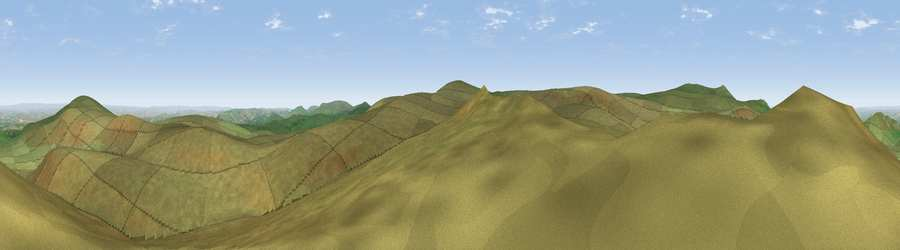

Viewpoint near Belstone
#6876 in England · top 9% of its area beats it · near BelstoneWhere it is
The exact computed spot (SX 61875 88838). Click the marker for map links.
The view, rendered

A 360° render of this exact spot computed from the terrain model, tree cover and land cover — summer colours, afternoon light, calibrated against photographs of famous viewpoints. Real trees, hedges and buildings will differ in detail.
The panorama
Grey silhouette: terrain skyline in each direction (720 bearings, Earth curvature and refraction included). Dashed green: skyline with trees (+15 m) and buildings (+8 m) as obstacles. Blue strip: how far the ground is visible on each bearing.
Where the view opens
Wedge length = distance to the farthest visible ground on that bearing (vegetation-aware). Rings at 10, 25 and 50 km.
What fills the view
98% grassland · 1% woodland ·
Angular shares of the visible panorama (visual magnitude), not map area. Landscape diversity 0.05 (0–1 Shannon).
Key numbers
More beautiful places nearby
The staircase of upgrades: each row has a higher view potential than everything closer. Driving times are estimates from straight-line distance, calibrated against real road routing — check an actual route before setting out.
| Place | Direction | Drive | Score |
|---|---|---|---|
| Hangingstone Hill | S · 3 km | ~7 min | 69.9 |
| Belstone Tor | N · 3 km | ~8 min | 73.0 |
| Viewpoint near South Zeal | NNE · 3 km | ~8 min | 75.0 |
| High Willhays | W · 4 km | ~9 min | 76.4 |
| Yes Tor | WNW · 4 km | ~9 min | 78.5 |
| Viewpoint near North Bovey | ESE · 13 km | ~24 min | 79.3 |
| Cairn | ESE · 17 km | ~30 min | 79.8 |
| Viewpoint near Haytor Vale | SE · 18 km | ~32 min | 80.1 |
50.68275, -3.95652 · source: screening · position refined by local search. Computed location — check access rights before visiting.